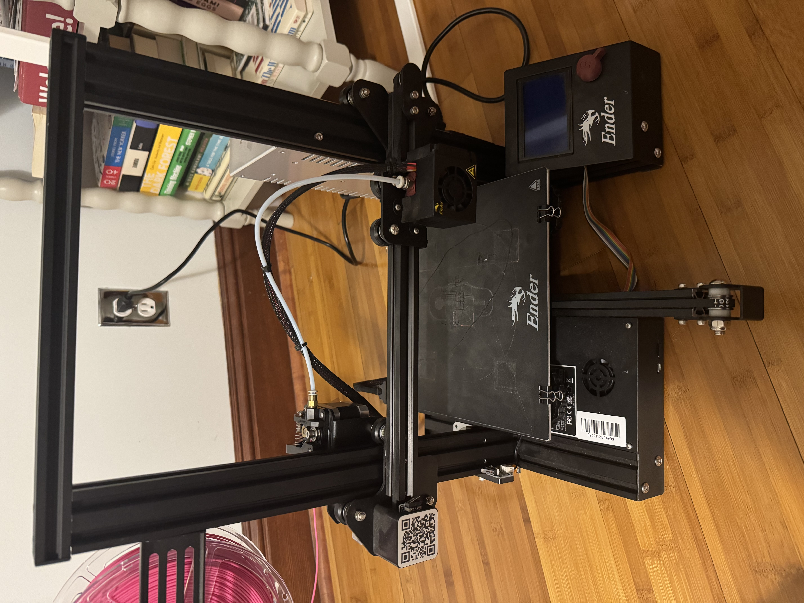
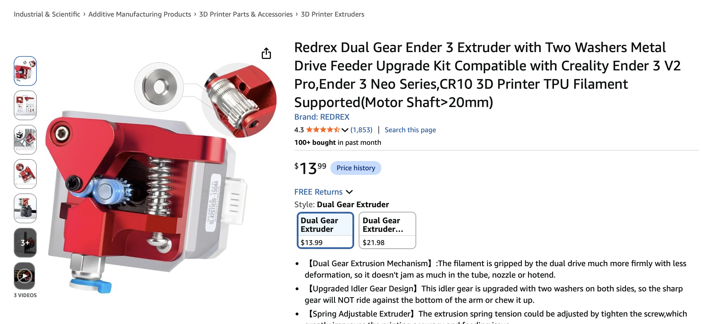
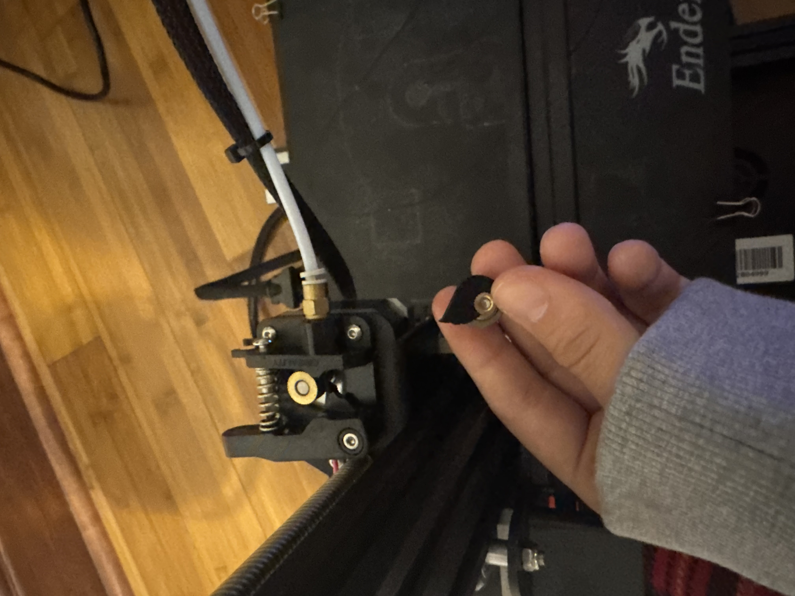
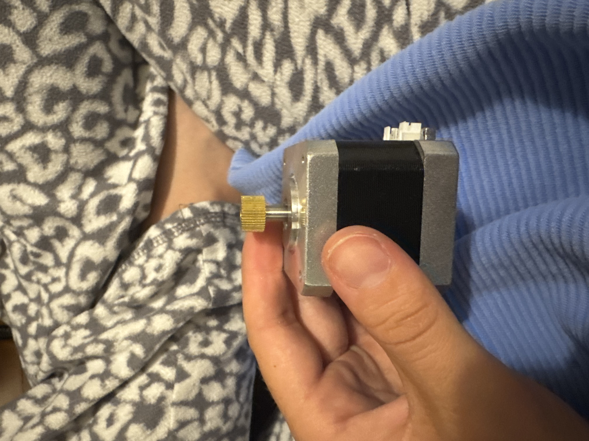
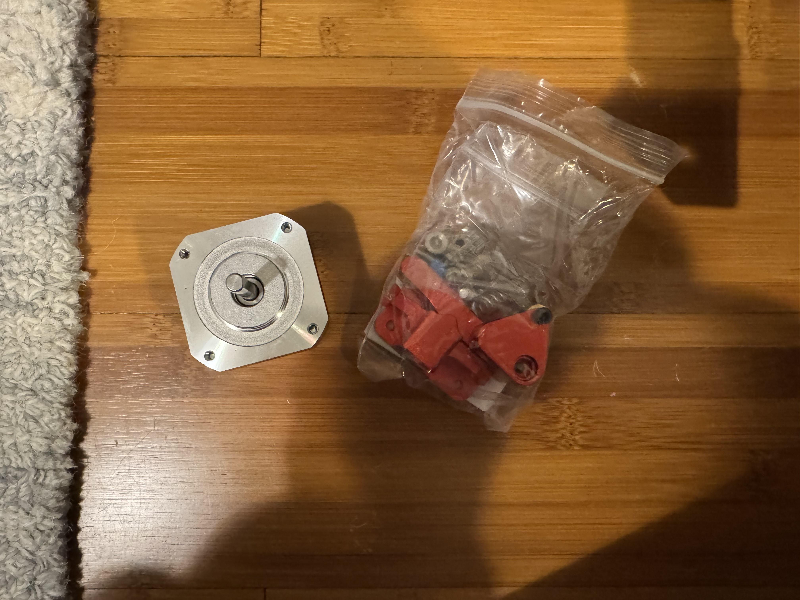
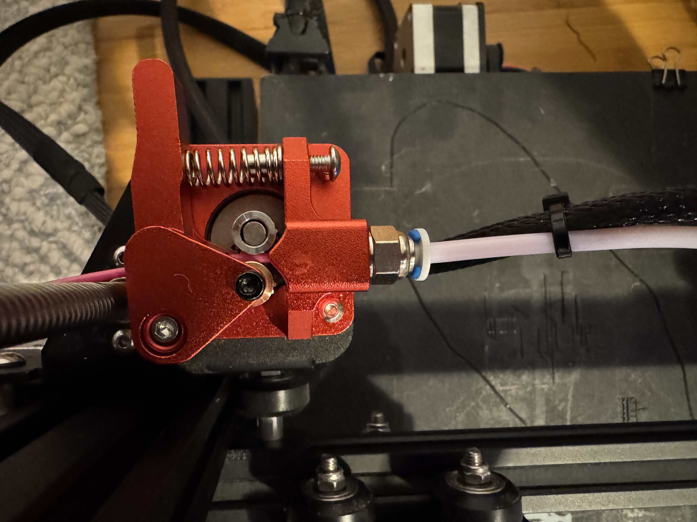
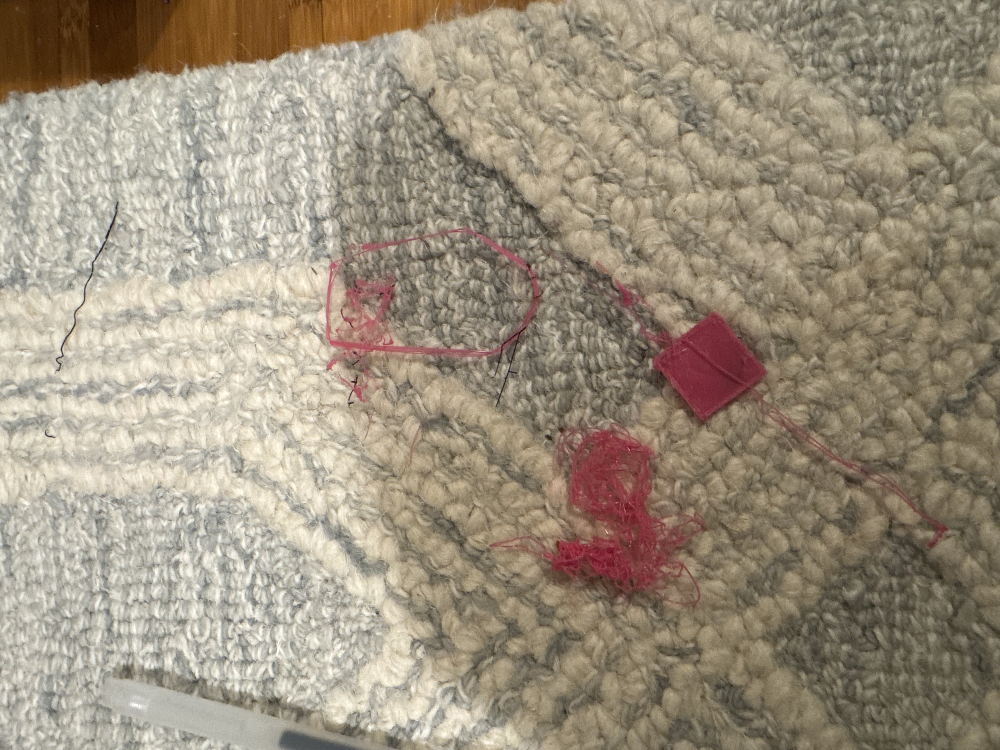
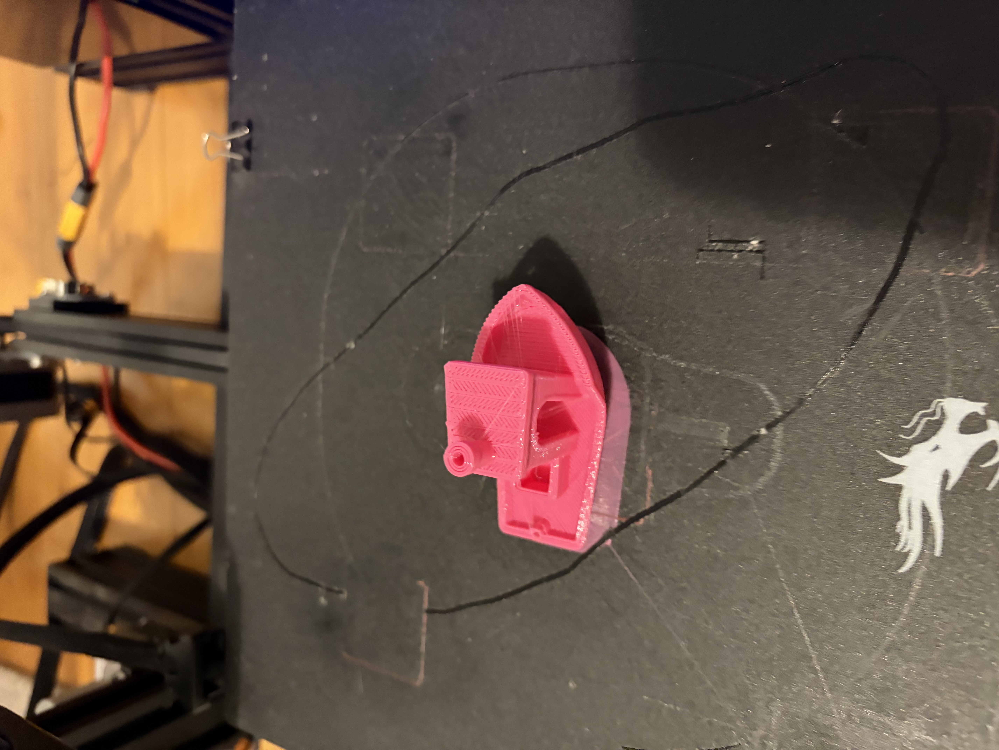
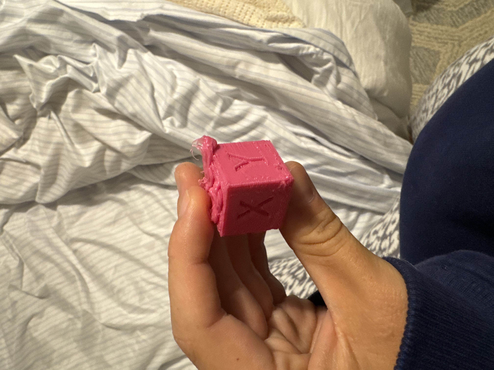

Repair log
Ender 3 Printer
After the keyboard phase, naturally, I have to have a 3D printer phase. Right now, I have an Ender 3, and I'm going to set it up and customize it over the summer.
Ender 3 printers are common open-source machines, but they are still fairly manual and a little rough around the edges. There is no automatic bed leveling by default, setup can be finicky, and getting consistently good prints usually takes iteration.
The goal of this section is to track upgrades, fixes, calibration notes, and what changes actually make the printer better over time.
What I'm Tracking
- Printer upgrades and quality-of-life improvements
- Better calibration and more reliable print settings
- Experiments with materials, parts, and workflows

June 22
Getting the printer running
The first signs of trouble showed up fast. I found the correct cable to plug my printer in, and after the moment of truth, nothing happened.
The first step was to get the printer running. Unfortunately, with a seven-year-old second-hand printer, something was bound to go wrong, and a bearing for loading the PLA into the extruder broke off. So I ordered a replacement piece so I can start printing.
Next steps are getting a first successful print, adding automatic bed leveling, and setting up a Raspberry Pi server so I don't have to load files manually with an SD card.
View 2 photos from this update


July 6
Replacing the extruder & first prints
Made a tiny mistake on the extruder piece. Turns out that, for an Ender3, there are two variants on the extruder stepper motor. One variant has a small screw that allows you to remove the gear, and another has a press-on gold gear you can't remove. I had the latter (unfortunately). So I reordered another extruder replacement matching the stepper motor and gear I had, and replaced it!
This also came with a new stepper and the first gear component I mentioned-- but the wasn't sticking, so I put some adhesive foam under the gear to make them mesh and I had a *working* extruder. I spent the red of the night tuning some print settings to produce two prints the next day: a calibration cube and, of course, benchy.
View 6 photos from this update






Notes & next steps
I fear this point is where I went abroad to Madrid. With two suitcases already weighed down with clothes and a very non-Californian coat, the Ender3 did not fit (as much as I wanted it to). So, the adventure will resume in winter - where I already have a BLTouch sensor waiting, a new hotend replacement, many pis, and many ideas.